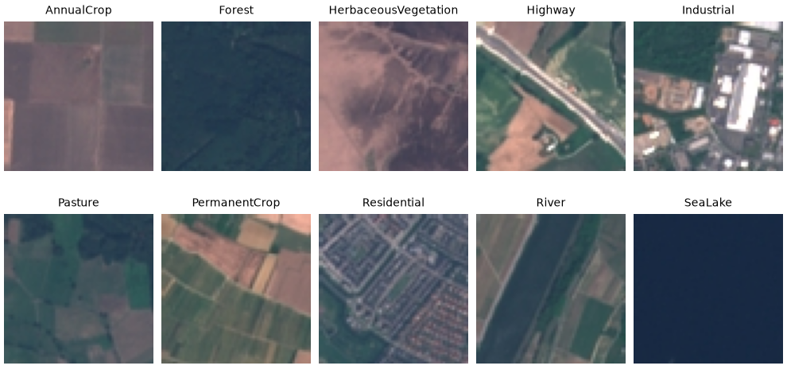
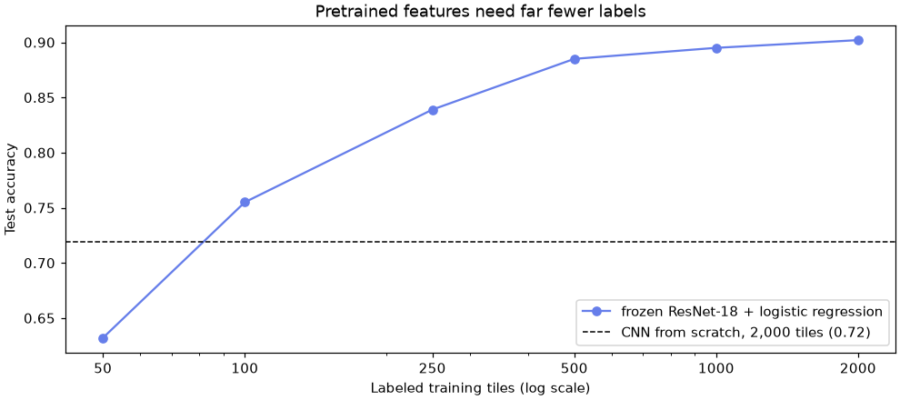
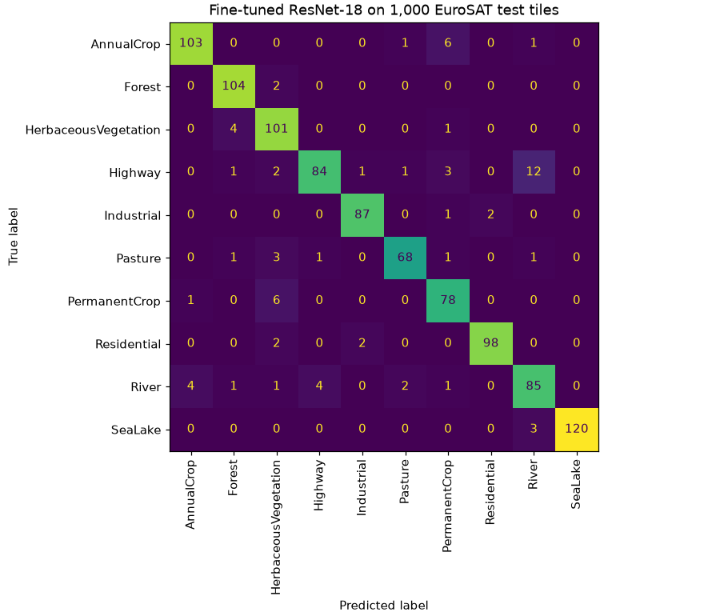

🛰️ Lesson 10.5: Transfer Learning
Borrow a network that has already learned to see from a million photos, and turn it into an accurate satellite-image classifier with two thousand labeled examples and a few minutes of CPU time.
🎯 Learning Objectives
By the end of this lesson, you will be able to:
- Explain why features learned on ImageNet transfer to a new image task, and when they will not
- Load a pretrained torchvision model with the
weights=API and prepare images the way it expects - Use a frozen backbone as a feature extractor and train a small head on its features
- Fine-tune the last block with a lower learning rate, and compare the result with a CNN trained from scratch
- Measure how many labeled images a model needs before you pay for labeling more
In This Lesson
🧭 Standing on a Pretrained Network
Pinecrest Outfitters is planning a trip-planning feature for its website: show customers what the land looks like around a trailhead (forest, river, lake, farmland, highway). The planning team has satellite image tiles but only a few thousand of them carry a label. In Lesson 10.3 a CNN needed 20,000 labeled photos and still mixed up shirts and coats. Training one from scratch on a couple of thousand satellite tiles sounds hopeless.
It is not, because you do not have to start from scratch. Research groups have trained large CNNs on ImageNet, 1.2 million photos in 1,000 categories, and published the weights. The early layers of those networks learned edges, colors and textures; the middle layers learned patterns of those: grids, stripes, foliage, water ripples. Those detectors are useful for almost any photo, including photos taken from space. Transfer learning means reusing them and training only what is specific to your task.
💡 Mental Model: The Experienced Photo Editor
Imagine hiring someone to sort aerial photos into ten land types. A newcomer who has never looked carefully at a photograph needs thousands of examples to learn what texture or a straight edge even is. An experienced photo editor already sees textures, edges and color gradients without thinking; shown a few dozen examples per land type, they learn which combinations mean "forest" and which mean "industrial". The pretrained network is that editor. You only teach it the last step: how its existing vocabulary maps onto your labels.
In code, a pretrained CNN splits into two parts: the backbone, all the convolutional layers that turn an image into a vector of features, and the head, the final layer that turns those features into ImageNet's 1,000 class scores. You throw the head away, attach a new one with your 10 classes, and decide how much of the backbone to let training change:
| Strategy | What trains | When it fits |
|---|---|---|
| Feature extraction (frozen backbone) | only the new head | little labeled data; images reasonably like photos. Fast: features can be computed once. |
| Fine-tuning (unfreeze the top blocks) | the head plus the last block or two, with a small learning rate | a few thousand labels or more, or images that differ from everyday photos |
| Full fine-tuning | everything, starting from the pretrained weights | lots of data and a GPU; still usually better than random weights |
| From scratch | everything, from random weights | huge datasets, or inputs nothing like photos (and even then, try transfer first) |
🤔 Why This Matters
Most real image projects have hundreds or thousands of labeled examples, not millions, and labeling is the expensive part. Transfer learning is the default way to build an image model in practice, and the same idea powers modern language models: someone pays for the huge pretraining run once, everyone else adapts the result cheaply.
📦 Data, Weights and the Cache
EuroSAT is a public dataset (MIT license) of 27,000 Sentinel-2 satellite tiles, each 64 × 64 pixels in RGB, in 10 land-cover classes. torchvision downloads it into data/eurosat/ on first use (94 MB, about 186 MB once unpacked); afterwards download=True just finds the files.
The pretrained weights download separately the first time you create the model: 45 MB for ResNet-18, saved in PyTorch's cache folder (.cache/torch/hub/checkpoints inside your home folder, on Windows, macOS and Linux alike; set the TORCH_HOME environment variable to put it elsewhere). Every later run loads them from disk. Start with the weights object, because it knows how its images must be prepared:
import time
import torch
from torch import nn
from torch.utils.data import DataLoader, Subset, TensorDataset
from torchvision import datasets, models, transforms
weights = models.ResNet18_Weights.DEFAULT
prep = weights.transforms()
print(weights)
print(prep)Output
ResNet18_Weights.IMAGENET1K_V1
ImageClassification(
crop_size=[224]
resize_size=[256]
mean=[0.485, 0.456, 0.406]
std=[0.229, 0.224, 0.225]
interpolation=InterpolationMode.BILINEAR
)DEFAULT is an alias for the best weights torchvision offers for this architecture, here IMAGENET1K_V1. Write weights=; the old pretrained=True argument is deprecated (Common Mistakes shows the warning). The printed transform is the recipe the network was trained with: resize to 256, crop the center 224 × 224, scale to 0..1, then subtract the ImageNet channel means and divide by the standard deviations.
Look at the data first, without any transform, so the tiles show their real colors:
import matplotlib.pyplot as plt
raw = datasets.EuroSAT("data", download=True)
print(len(raw), raw[0][0].size)
print(raw.classes)
first_of_each = [raw.targets.index(c) for c in range(10)]
fig, axes = plt.subplots(2, 5, figsize=(9, 4.4), layout="constrained")
for ax, i in zip(axes.flat, first_of_each):
img, label = raw[i]
ax.imshow(img)
ax.set_title(raw.classes[label], fontsize=9)
ax.axis("off")
plt.show()Output
27000 (64, 64)
['AnnualCrop', 'Forest', 'HerbaceousVegetation', 'Highway', 'Industrial', 'Pasture', 'PermanentCrop', 'Residential', 'River', 'SeaLake']
EuroSAT has no official train/test split, so make a seeded one. To keep the lesson fast on a CPU, use 2,000 random tiles for training and 1,000 others for testing; the project adds 500 more for validation. That is a realistic "we labeled a couple of thousand images" situation, and it leaves 23,500 tiles you can add later to scale up.
order = torch.randperm(len(raw), generator=torch.Generator().manual_seed(42))
train_idx, test_idx = order[:2000].tolist(), order[2000:3000].tolist()
targets = torch.tensor(raw.targets)
y_train, y_test = targets[train_idx], targets[test_idx]
print(torch.bincount(y_train))
print(f"majority-class baseline accuracy: {(y_test == y_train.mode().values).float().mean():.3f}")Output
tensor([208, 226, 233, 189, 188, 152, 183, 212, 183, 226])
majority-class baseline accuracy: 0.106The classes are roughly balanced (the smallest, Pasture, has 2,000 tiles in the full set against 3,000 for the largest), so the do-nothing baseline is about 11% and accuracy is a sensible headline metric.
🎨 Preparing Images the Way the Model Expects
A pretrained network only works if new images look, numerically, like the images it learned from. Two rules matter:
- Normalize with the training statistics. The first layer's filters were tuned on pixels shifted by the ImageNet mean and scaled by its standard deviation, channel by channel. Feed it plain 0..1 pixels and every activation is off (mistake 4 measures how much it costs). Read the numbers from
prep.meanandprep.stdrather than typing them. - Keep objects at a sensible size. The full recipe resizes to 224 pixels. EuroSAT tiles are 64 pixels, and on a CPU every doubling of the side costs four times the computation. A compromise of 128 pixels works well here (Exercise 3 measures 64), and the center crop is skipped because satellite tiles have no "main object" in the middle.
eurosat_tf = transforms.Compose([
transforms.Resize(128),
transforms.ToTensor(),
transforms.Normalize(mean=prep.mean, std=prep.std),
])
eurosat = datasets.EuroSAT("data", download=True, transform=eurosat_tf)
train_set, test_set = Subset(eurosat, train_idx), Subset(eurosat, test_idx)
x0, label0 = train_set[0]
print(tuple(x0.shape), eurosat.classes[label0])
print(f"channel means after normalizing: {x0.mean(dim=(1, 2)).numpy().round(2)}")Output
(3, 128, 128) Forest
channel means after normalizing: [-1.01 -0.64 0.11]The tile is now a 3 × 128 × 128 tensor with values centered near zero, the form the network expects. Satellite images are greener and darker than the average ImageNet photo, so the means are not exactly zero, and that is fine: the statistics must be the ones the model was trained with, not your dataset's.
🎯 Baseline: A CNN from Scratch
To know what transfer learning buys, first train a CNN from random weights on the same 2,000 tiles, using the Lesson 10.3 recipe with one more block for the bigger color images. The tiles are small, so decode them once into tensors at their native 64 pixels; a dataset that fits in memory never needs to reopen thousands of image files every epoch.
plain_tf = transforms.Compose([transforms.ToTensor(), transforms.Normalize(mean=prep.mean, std=prep.std)])
eurosat64 = datasets.EuroSAT("data", download=True, transform=plain_tf)
X64_train = torch.stack([eurosat64[i][0] for i in train_idx])
X64_test = torch.stack([eurosat64[i][0] for i in test_idx])
print(tuple(X64_train.shape), tuple(X64_test.shape))Output
(2000, 3, 64, 64) (1000, 3, 64, 64)torch.manual_seed(42)
scratch = nn.Sequential(
nn.Conv2d(3, 16, kernel_size=3, padding=1), nn.ReLU(), nn.MaxPool2d(2),
nn.Conv2d(16, 32, kernel_size=3, padding=1), nn.ReLU(), nn.MaxPool2d(2),
nn.Conv2d(32, 64, kernel_size=3, padding=1), nn.ReLU(), nn.MaxPool2d(2),
nn.Flatten(), nn.Linear(64 * 8 * 8, 10),
)
print(f"parameters: {sum(p.numel() for p in scratch.parameters()):,}")
torch.manual_seed(42)
loader = DataLoader(TensorDataset(X64_train, y_train), batch_size=64, shuffle=True)
optimizer = torch.optim.Adam(scratch.parameters(), lr=1e-3)
for epoch in range(1, 11):
scratch.train()
total = 0.0
for xb, yb in loader:
optimizer.zero_grad()
loss = nn.functional.cross_entropy(scratch(xb), yb)
loss.backward()
optimizer.step()
total += loss.item() * len(yb)
if epoch % 2 == 0:
print(f"epoch {epoch:2d}: train loss {total / len(y_train):.3f}")
scratch.eval()
with torch.no_grad():
scratch_acc = (scratch(X64_test).argmax(dim=1) == y_test).float().mean().item()
print(f"from-scratch CNN test accuracy: {scratch_acc:.3f}")Output (yours may vary slightly)
parameters: 64,554
epoch 2: train loss 1.435
epoch 4: train loss 1.064
epoch 6: train loss 0.908
epoch 8: train loss 0.795
epoch 10: train loss 0.629
from-scratch CNN test accuracy: 0.719About 72% on the test tiles: far better than the 11% baseline, but the training loss is still falling after 10 epochs and the network has had only 2,000 examples to learn what a field, a road or a river looks like from scratch. More epochs and augmentation would help a little. The next section helps a lot more.
🧊 Frozen Features and a New Head
Now the pretrained route. Load ResNet-18 with its ImageNet weights and look at its last layer:
backbone = models.resnet18(weights=weights)
print(backbone.fc)
print(f"parameters: {sum(p.numel() for p in backbone.parameters()):,}")
backbone.fc = nn.Identity()
backbone.eval()
print(tuple(backbone(torch.zeros(2, 3, 128, 128)).shape))Output
Linear(in_features=512, out_features=1000, bias=True)
parameters: 11,689,512
(2, 512)The head, fc, maps 512 features to 1,000 ImageNet classes. Replacing it with nn.Identity() (a layer that returns its input unchanged) turns the network into a feature extractor: every image becomes 512 numbers. backbone.eval() matters even though nothing will train: it makes the batch-normalization layers use their stored ImageNet statistics (mistake 5 shows what happens otherwise).
Because the backbone is frozen, each image's features never change. So compute them once, under torch.inference_mode() (a stricter, slightly faster no_grad for code that will never need gradients):
def extract(model, dataset, batch_size=100):
feats = []
with torch.inference_mode():
for xb, _ in DataLoader(dataset, batch_size=batch_size):
feats.append(model(xb))
return torch.cat(feats)
start = time.perf_counter()
F_train = extract(backbone, train_set)
F_test = extract(backbone, test_set)
print(f"features for {len(F_train) + len(F_test):,} tiles in {time.perf_counter() - start:.0f} s")Output (your numbers will differ)
features for 3,000 tiles in 13 sThat is the expensive step, a few seconds per thousand tiles on a laptop CPU. Everything after it is fast, because the 3,000 tiles are now just a table of 512 numbers each. Train a new head, a single nn.Linear(512, 10), on that table:
print(tuple(F_train.shape), tuple(F_test.shape))
torch.manual_seed(42)
head = nn.Linear(512, 10)
optimizer = torch.optim.Adam(head.parameters(), lr=1e-3)
loader = DataLoader(TensorDataset(F_train, y_train), batch_size=64, shuffle=True)
for epoch in range(1, 31):
for fb, yb in loader:
optimizer.zero_grad()
nn.functional.cross_entropy(head(fb), yb).backward()
optimizer.step()
with torch.no_grad():
head_acc = (head(F_test).argmax(dim=1) == y_test).float().mean().item()
print(f"frozen ResNet-18 + linear head, test accuracy: {head_acc:.3f}")Output (yours may vary slightly)
(2000, 512) (1000, 512)
frozen ResNet-18 + linear head, test accuracy: 0.91391% from one linear layer trained for a second or two, against 72% for the CNN that had to learn everything itself. Nothing in ResNet-18 ever saw a satellite image, yet its general-purpose features (textures, edges, colors, regular patterns) already separate forests from fields from water. Training changed only 5,130 numbers: 512 × 10 weights plus 10 biases.
✅ Features Are Just a Table
Once the features are extracted, everything from Modules 1 to 9 applies: logistic regression, cross-validation, pipelines, even k-nearest neighbors on the 512 numbers. The next section uses scikit-learn's LogisticRegression on them directly. Deep learning made the features; classic machine learning can take it from there.
🏷️ How Many Labels Do You Need?
Labeling satellite tiles costs someone's time. Before asking for more, measure how accuracy grows with the number of labeled training tiles. With cached features, each point on the curve takes a fraction of a second. The training tiles are already in random order, so the first n are a random sample:
from sklearn.linear_model import LogisticRegression
sizes = [50, 100, 250, 500, 1000, 2000]
curve = []
for n in sizes:
clf = LogisticRegression(max_iter=2000).fit(F_train[:n].numpy(), y_train[:n].numpy())
curve.append(clf.score(F_test.numpy(), y_test.numpy()))
print(f"{n:5d} labeled tiles: test accuracy {curve[-1]:.3f}")
fig, ax = plt.subplots(figsize=(9, 4), layout="constrained")
ax.plot(sizes, curve, marker="o", color="#667eea", label="frozen ResNet-18 + logistic regression")
ax.axhline(scratch_acc, color="black", linestyle="--", linewidth=1, label=f"CNN from scratch, 2,000 tiles ({scratch_acc:.2f})")
ax.set_xscale("log")
ax.set_xticks(sizes, [str(s) for s in sizes])
ax.set_xlabel("Labeled training tiles (log scale)")
ax.set_ylabel("Test accuracy")
ax.set_title("Pretrained features need far fewer labels")
ax.legend(loc="lower right")
plt.show()Output
50 labeled tiles: test accuracy 0.632
100 labeled tiles: test accuracy 0.755
250 labeled tiles: test accuracy 0.839
500 labeled tiles: test accuracy 0.885
1000 labeled tiles: test accuracy 0.895
2000 labeled tiles: test accuracy 0.902
Read the curve like a budget. Frozen features with 100 labeled tiles (75.5%) beat the from-scratch CNN with twenty times as many (71.9%). Beyond about 500 tiles the gains shrink: going from 1,000 to 2,000 labels adds less than one point. If Pinecrest wanted more accuracy, labeling another few thousand tiles for this model would buy little; fine-tuning, which lets the features themselves adapt, is the better next step. (A single 1,000-tile test set has a margin of error of about ±2 points, so read the small differences at the top of the curve loosely.)
🔧 Light Fine-Tuning
Frozen features are general-purpose: they were tuned to tell dogs from teapots, not pasture from herbaceous vegetation. Fine-tuning lets the top of the backbone adjust to your images. ResNet-18 is built from a stem (conv1, bn1) and four blocks, layer1 to layer4, then avgpool and fc. The later blocks hold the most task-specific features, so they are the ones worth adapting; the early edge and color detectors are fine as they are.
Freezing is one attribute per weight tensor: requires_grad = False tells autograd not to compute its gradient, so the optimizer never changes it (and the backward pass skips the work). Build the model, freeze everything, give it a fresh head, then unfreeze layer4:
def count_trainable(model):
return sum(p.numel() for p in model.parameters() if p.requires_grad)
torch.manual_seed(42)
ft_model = models.resnet18(weights=weights)
for p in ft_model.parameters():
p.requires_grad = False
ft_model.fc = nn.Linear(ft_model.fc.in_features, 10) # new layers are trainable by default
print(f"head only : {count_trainable(ft_model):,} trainable")
for p in ft_model.layer4.parameters():
p.requires_grad = True
print(f"head + layer4 : {count_trainable(ft_model):,} trainable of {sum(p.numel() for p in ft_model.parameters()):,}")Output
head only : 5,130 trainable
head + layer4 : 8,398,858 trainable of 11,181,642Two rules keep fine-tuning from destroying what you borrowed:
- Train the head first. A brand-new head starts with random weights, so its first gradients are large and noisy. Let it settle with the backbone frozen, then unfreeze.
- Use a smaller learning rate for pretrained layers. They already hold good weights and only need nudging. An optimizer accepts parameter groups, each with its own learning rate:
optimizer = torch.optim.Adam([
{"params": ft_model.layer4.parameters(), "lr": 1e-4},
{"params": ft_model.fc.parameters(), "lr": 1e-3},
])
for group in optimizer.param_groups:
print(group["lr"], sum(p.numel() for p in group["params"]))Output
0.0001 8393728
0.001 5130⚠️ Batch Normalization During Fine-Tuning
model.train() switches every batch-normalization layer to batch statistics and lets it update its stored running averages, even in frozen blocks, because those averages are not gradients. That is usually harmless with batches of 64, and it even adapts the statistics to satellite images. With very small batches (under about 16), keep the frozen parts in eval mode: call model.train() and then .eval() on the frozen submodules. While only the head trains, the simplest correct choice is to leave the whole model in eval() mode: gradients still flow into the head, because eval() changes layer behavior, not gradient tracking.
Fine-tuning has to run the full backbone forward and part of it backward for every batch of every epoch, so it costs much more than the cached-feature head. On a CPU, one epoch over 2,000 tiles at 128 pixels takes 15 to 30 seconds; on a GPU, a second or two. The project runs it: two epochs for the head, then two with layer4 unfrozen.
💡 Scaling Up on a GPU
With a CUDA GPU, move the model and each batch to "cuda" (Lesson 10.3, Scaling Up), use all 27,000 tiles at the full 224-pixel recipe from weights.transforms(), add training-only augmentation (random flips and 90-degree rotations suit satellite images, which have no "up"), unfreeze layer3 as well, and train for 5 to 10 epochs. Published results on EuroSAT with fine-tuned ImageNet CNNs reach the high 90s in accuracy.
⚠️ Common Mistakes
Transfer learning fails quietly more often than loudly: three of these five mistakes run without an error.
1. Using the Old pretrained=True Argument
import warnings
with warnings.catch_warnings(record=True) as caught:
warnings.simplefilter("always")
old_style = models.resnet18(pretrained=True)
print(caught[0].category.__name__)
print(caught[0].message)Output
UserWarning
The parameter 'pretrained' is deprecated since 0.13 and may be removed in the future, please use 'weights' instead.What it means: older tutorials (and older lessons) load weights with pretrained=True. It still works for now, with a warning, but it is scheduled for removal and cannot say which weights you want. Fix: models.resnet18(weights=models.ResNet18_Weights.DEFAULT), or name a specific version such as IMAGENET1K_V1 when you need results to stay reproducible.
2. Feeding a Grayscale Image to an RGB Network
gray_batch = torch.zeros(1, 1, 128, 128)
backbone(gray_batch)Error
RuntimeError: Given groups=1, weight of size [64, 3, 7, 7], expected input[1, 1, 128, 128] to have 3 channels, but got 1 channels insteadWhat it means: the first convolution of an ImageNet model has 64 filters that each span 3 color channels, and your image has 1. You would hit this trying to reuse ResNet on Fashion-MNIST. Fix: repeat the gray channel three times, with transforms.Grayscale(num_output_channels=3) in the transform or x.repeat(1, 3, 1, 1) on a batch.
3. Freezing the New Head Too
frozen_all = models.resnet18(weights=weights)
frozen_all.fc = nn.Linear(512, 10)
for p in frozen_all.parameters(): # runs AFTER the new head was attached
p.requires_grad = False
loss = nn.functional.cross_entropy(frozen_all(torch.zeros(2, 3, 128, 128)), torch.tensor([0, 1]))
loss.backward()Error
RuntimeError: element 0 of tensors does not require grad and does not have a grad_fnWhat it means: nothing in the model needs a gradient, so there is nothing for backward() to compute. If an optimizer had only some of the parameters, the symptom would instead be a loss that never moves. Fix: freeze first, then attach the new head (new layers are trainable by default), and check with count_trainable(model) before training.
4. Skipping the ImageNet Normalization
Extract features for the first 1,000 training tiles and 500 test tiles with only ToTensor(), and compare a logistic-regression head with the same tiles' properly normalized features:
unnorm = datasets.EuroSAT("data", download=True,
transform=transforms.Compose([transforms.Resize(128), transforms.ToTensor()]))
U_train = extract(backbone, Subset(unnorm, train_idx[:1000]))
U_test = extract(backbone, Subset(unnorm, test_idx[:500]))
for name, (a, b) in {"normalized": (F_train[:1000], F_test[:500]), "not normalized": (U_train, U_test)}.items():
clf = LogisticRegression(max_iter=2000).fit(a.numpy(), y_train[:1000].numpy())
print(f"{name:15s} test accuracy {clf.score(b.numpy(), y_test[:500].numpy()):.3f}")Output (no error, and that is the problem)
normalized test accuracy 0.894
not normalized test accuracy 0.840What happened: the unnormalized features cost more than 5 points of accuracy (0.840 against 0.894) without any warning. The network still produces 512 numbers per tile, they are just computed from inputs on a different scale than its filters were trained for, so they describe the tiles less well. Fix: always build the transform from the weights' own mean and std, and check one batch's channel means after loading, as the lesson did.
5. Extracting Features in Training Mode
probe = models.resnet18(weights=weights)
probe.fc = nn.Identity()
tiles = torch.stack([train_set[i][0] for i in range(8)])
before = probe.bn1.running_mean.clone()
probe.train()
with torch.no_grad():
in_batch_of_8 = probe(tiles)[0]
in_batch_of_2 = probe(tiles[:2])[0]
print("same tile, same features?", torch.allclose(in_batch_of_8, in_batch_of_2, atol=1e-4))
print("stored ImageNet statistics changed?", not torch.equal(before, probe.bn1.running_mean))Output (no error, and that is the problem)
same tile, same features? False
stored ImageNet statistics changed? TrueWhat happened: a freshly created model is in training mode, where batch normalization normalizes with the statistics of the current batch. The features for one tile then depend on which other tiles share its batch, and every forward pass quietly overwrites the stored ImageNet statistics, even under no_grad. Fix: call model.eval() before extracting features or predicting, as the lesson did with backbone.eval().
🛠️ Project: A Land-Cover Classifier
Build the classifier the way you would ship it: one model object that takes a tile and returns a class, trained in two stages (head first, then layer4), with a validation set to watch progress, one final test, per-class results and a saved state_dict. Work in a new notebook called lesson_10_5_project; it starts from scratch. Allow about 45 minutes, including about a minute of training on a CPU.
🛠️ Step 1: Data, split and loaders (5 min)
Same seeded order as the lesson, so the training and test tiles are the same; the next 500 tiles become a validation set.
import copy
import torch
from torch import nn
from torch.utils.data import DataLoader, Subset
from torchvision import datasets, models, transforms
weights = models.ResNet18_Weights.DEFAULT
prep = weights.transforms()
tf = transforms.Compose([transforms.Resize(128), transforms.ToTensor(),
transforms.Normalize(mean=prep.mean, std=prep.std)])
eurosat = datasets.EuroSAT("data", download=True, transform=tf)
classes = eurosat.classes
order = torch.randperm(len(eurosat), generator=torch.Generator().manual_seed(42)).tolist()
train_set = Subset(eurosat, order[:2000])
test_set = Subset(eurosat, order[2000:3000])
val_set = Subset(eurosat, order[3000:3500])
torch.manual_seed(42)
train_loader = DataLoader(train_set, batch_size=64, shuffle=True)
val_loader = DataLoader(val_set, batch_size=100)
test_loader = DataLoader(test_set, batch_size=100)
print(len(train_set), len(val_set), len(test_set))Output
2000 500 1000🛠️ Step 2: The model: pretrained backbone, new head (5 min)
torch.manual_seed(42)
model = models.resnet18(weights=weights)
for p in model.parameters():
p.requires_grad = False
model.fc = nn.Linear(model.fc.in_features, len(classes))
def count_trainable(m):
return sum(p.numel() for p in m.parameters() if p.requires_grad)
def accuracy(m, loader):
m.eval()
correct = 0
with torch.no_grad():
for xb, yb in loader:
correct += (m(xb).argmax(dim=1) == yb).sum().item()
return correct / len(loader.dataset)
print(f"trainable parameters: {count_trainable(model):,}")
print(f"validation accuracy before training: {accuracy(model, val_loader):.3f}")Output
trainable parameters: 5,130
validation accuracy before training: 0.164Before any training the random head scores 16%, close to the 10% of pure guessing, as it should.
🛠️ Step 3: Stage 1, train the head (10 min)
One reusable training function. In stage 1 the whole model stays in eval() mode (the backbone is frozen, so its batch-norm statistics must not move), and gradients still reach the head.
def train_epochs(m, optimizer, epochs, train_mode):
loss_fn = nn.CrossEntropyLoss()
for epoch in range(1, epochs + 1):
m.train() if train_mode else m.eval()
total = 0.0
for xb, yb in train_loader:
optimizer.zero_grad()
loss = loss_fn(m(xb), yb)
loss.backward()
optimizer.step()
total += loss.item() * len(yb)
print(f" epoch {epoch}: train loss {total / len(train_set):.3f} validation accuracy {accuracy(m, val_loader):.3f}")
print("stage 1: head only")
train_epochs(model, torch.optim.Adam(model.fc.parameters(), lr=1e-3), epochs=2, train_mode=False)Output (yours may vary slightly)
stage 1: head only
epoch 1: train loss 1.617 validation accuracy 0.824
epoch 2: train loss 0.813 validation accuracy 0.876🛠️ Step 4: Stage 2, fine-tune layer4 (10 min)
Unfreeze the last block, give it a learning rate ten times smaller than the head's, and train in train() mode. Keep a copy of the stage-1 weights so you can fall back if fine-tuning makes validation accuracy worse.
stage1_state = copy.deepcopy(model.state_dict())
stage1_val = accuracy(model, val_loader)
for p in model.layer4.parameters():
p.requires_grad = True
print(f"stage 2: head + layer4 ({count_trainable(model):,} trainable)")
optimizer = torch.optim.Adam([
{"params": model.layer4.parameters(), "lr": 1e-4},
{"params": model.fc.parameters(), "lr": 1e-3},
])
train_epochs(model, optimizer, epochs=2, train_mode=True)
stage2_val = accuracy(model, val_loader)
if stage2_val < stage1_val:
model.load_state_dict(stage1_state)
print(f"validation: stage 1 {stage1_val:.3f}, stage 2 {stage2_val:.3f}; keeping stage {1 if stage2_val < stage1_val else 2}")Output (yours may vary slightly)
stage 2: head + layer4 (8,398,858 trainable)
epoch 1: train loss 0.592 validation accuracy 0.894
epoch 2: train loss 0.080 validation accuracy 0.924
validation: stage 1 0.876, stage 2 0.924; keeping stage 2The head alone reached 87.6% validation accuracy in two epochs (a little below the cached-feature head, which had 30 epochs). Letting layer4 adapt pushed validation accuracy to 92.4%, so the code keeps stage 2. The training loss falling to 0.080 while validation accuracy is 0.924 is a sign that more epochs would start to overfit 2,000 tiles: two is enough here.
🛠️ Step 5: Test once, class by class (10 min)
import matplotlib.pyplot as plt
from sklearn.metrics import ConfusionMatrixDisplay
model.eval()
preds, truth = [], []
with torch.no_grad():
for xb, yb in test_loader:
preds.append(model(xb).argmax(dim=1))
truth.append(yb)
preds, truth = torch.cat(preds), torch.cat(truth)
test_acc = (preds == truth).float().mean().item()
print(f"test accuracy: {test_acc:.3f}")
per_class = {name: (preds[truth == c] == c).float().mean().item() for c, name in enumerate(classes)}
for name, acc in sorted(per_class.items(), key=lambda item: item[1])[:3]:
print(f" {name:22s} {acc:.3f}")
fig, ax = plt.subplots(figsize=(8, 7), layout="constrained")
ConfusionMatrixDisplay.from_predictions(truth.numpy(), preds.numpy(), display_labels=classes,
xticks_rotation="vertical", colorbar=False, ax=ax)
ax.set_title("Fine-tuned ResNet-18 on 1,000 EuroSAT test tiles")
plt.show()Output (yours may vary slightly)
test accuracy: 0.928
Highway 0.808
River 0.867
Pasture 0.907
🛠️ Step 6: Save, reload and summarize (5 min)
Save only the weights. To load them, rebuild the same architecture (ResNet-18 with a 10-class head; no need to download the ImageNet weights again, so weights=None) and load the file with weights_only=True.
torch.save(model.state_dict(), "landcover_resnet18.pt")
restored = models.resnet18(weights=None)
restored.fc = nn.Linear(512, len(classes))
restored.load_state_dict(torch.load("landcover_resnet18.pt", weights_only=True))
restored.eval()
with torch.no_grad():
tile, label = test_set[0]
probs = torch.softmax(restored(tile.unsqueeze(0)), dim=1)[0]
print(f"first test tile: predicted {classes[probs.argmax()]} ({probs.max():.0%}), true {classes[label]}")
print(f"""Land-cover classifier
Labeled tiles : {len(train_set):,} train, {len(val_set)} validation, {len(test_set):,} test
Backbone : ResNet-18, ImageNet weights, layer4 fine-tuned
Test accuracy : {test_acc:.3f}
Weakest class : {min(per_class, key=per_class.get)} ({min(per_class.values()):.3f})
Saved : landcover_resnet18.pt""")Output (yours may vary slightly)
first test tile: predicted PermanentCrop (100%), true PermanentCrop
Land-cover classifier
Labeled tiles : 2,000 train, 500 validation, 1,000 test
Backbone : ResNet-18, ImageNet weights, layer4 fine-tuned
Test accuracy : 0.928
Weakest class : Highway (0.808)
Saved : landcover_resnet18.pt✅ Project Completion Checklist
- Your split has 2,000 training, 500 validation and 1,000 test tiles from one seeded permutation
- Before stage 1 only the new head (5,130 parameters) is trainable, and validation accuracy is near chance
- Stage 2 unfroze
layer4with a learning rate ten times smaller than the head's - You chose between stage 1 and stage 2 on validation accuracy, then used the test set once
- You reported per-class accuracy and looked at the confusion matrix
landcover_resnet18.ptreloads into a fresh ResNet-18 withweights_only=True
🏋️ Hands-on Exercises
These continue from the lesson's notebook (not the project), so weights, raw, eurosat, train_idx, test_idx, y_train, y_test, F_train, F_test and extract already exist. If you are in the project notebook instead, rerun the lesson's setup blocks first.
🏋️ Exercise 1: What Does ImageNet Think a Satellite Tile Is?
Load ResNet-18 with its original 1,000-class head and ask it about the first five test tiles. Print the top ImageNet category for each next to the true EuroSAT class. The names are in weights.meta["categories"]. What does this say about why you need a new head?
💡 Hint
Do not replace fc this time. Remember .eval(), and index the categories list with argmax.
✅ Solution
imagenet_model = models.resnet18(weights=weights).eval()
categories = weights.meta["categories"]
with torch.no_grad():
logits = imagenet_model(torch.stack([eurosat[i][0] for i in test_idx[:5]]))
for i, guess in zip(test_idx[:5], logits.argmax(dim=1)):
print(f"{eurosat.classes[eurosat.targets[i]]:22s} -> ImageNet says: {categories[guess]}")Output
PermanentCrop -> ImageNet says: balloon
Industrial -> ImageNet says: vending machine
Highway -> ImageNet says: corkscrew
HerbaceousVegetation -> ImageNet says: dam
SeaLake -> ImageNet says: jellyfishThe original network does its best with the 1,000 everyday categories it knows: a lake becomes a jellyfish, a highway a corkscrew. Its features are useful, but its final layer answers the wrong question. That is exactly why transfer learning keeps the backbone and replaces the head.
🏋️ Exercise 2: A Smaller Backbone
Repeat the frozen-feature experiment with models.mobilenet_v3_small and its MobileNet_V3_Small_Weights.DEFAULT weights (a 10 MB download), a network designed for phones. Its head is model.classifier; replace that with nn.Identity(). Fit LogisticRegression(max_iter=2000) on the features and compare accuracy, feature size and extraction time with ResNet-18.
💡 Hint
Its weights use the same ImageNet mean and standard deviation, so train_set and test_set can be reused as they are. Time the extraction with time.perf_counter().
✅ Solution
mobile = models.mobilenet_v3_small(weights=models.MobileNet_V3_Small_Weights.DEFAULT)
mobile.classifier = nn.Identity()
mobile.eval()
start = time.perf_counter()
M_train, M_test = extract(mobile, train_set), extract(mobile, test_set)
mobile_seconds = time.perf_counter() - start
mobile_clf = LogisticRegression(max_iter=2000).fit(M_train.numpy(), y_train.numpy())
print(f"MobileNetV3-small features: {M_train.shape[1]}, test accuracy {mobile_clf.score(M_test.numpy(), y_test.numpy()):.3f}")
print(f"parameters: {sum(p.numel() for p in mobile.parameters()):,}")Output (yours may vary slightly)
MobileNetV3-small features: 576, test accuracy 0.913
parameters: 927,008MobileNetV3-small has about 12 times fewer parameters than ResNet-18 (0.9 million against 11.7 million) and extracts its features roughly twice as fast on a CPU, yet its head scores about the same, 91.3% against 90.2% for ResNet-18 with the same logistic regression. For a phone app or a tight CPU budget, a small backbone is often the right call. Check on your own data: rankings between backbones change from task to task.
🏋️ Exercise 3: Does Resolution Matter?
Extract ResNet-18 features at the tiles' native 64 pixels (no Resize) and compare a logistic-regression head with the 128-pixel features. Before running it, predict: better, worse or the same?
💡 Hint
Build a dataset with only ToTensor() and Normalize, wrap it in Subset with train_idx and test_idx, and reuse extract(backbone, ...).
✅ Solution
native = datasets.EuroSAT("data", download=True, transform=plain_tf)
N_train, N_test = extract(backbone, Subset(native, train_idx)), extract(backbone, Subset(native, test_idx))
for name, (a, b) in {"64 px": (N_train, N_test), "128 px": (F_train, F_test)}.items():
clf = LogisticRegression(max_iter=2000).fit(a.numpy(), y_train.numpy())
print(f"{name:7s} test accuracy {clf.score(b.numpy(), y_test.numpy()):.3f}")Output (yours may vary slightly)
64 px test accuracy 0.883
128 px test accuracy 0.902Native 64-pixel tiles score 88.3% against 90.2% at 128 pixels, and extract about four times faster. Upscaling adds no new detail, but it makes objects closer to the size the ImageNet filters were trained on, and leaves more than a 2 × 2 grid of positions after ResNet's five halvings. Whether 1.9 points is worth four times the compute is a business decision, not a technical one.
🏋️ Exercise 4: Search by Similarity (Stretch)
Features are also a similarity measure. For the first test tile, find the five training tiles whose ResNet-18 features have the highest cosine similarity, and plot the query next to them with their classes. This is the core of "find similar images" search, with no extra training at all.
💡 Hint
torch.nn.functional.cosine_similarity(F_test[0:1], F_train) gives one similarity per training tile; .topk(5) returns the best values and their positions. Use the untransformed raw dataset to display tiles.
✅ Solution
sims = nn.functional.cosine_similarity(F_test[0:1], F_train)
best = sims.topk(5)
print("query:", raw.classes[y_test[0]])
print("neighbors:", [raw.classes[y_train[j]] for j in best.indices])
print("similarity:", best.values.numpy().round(2))
fig, axes = plt.subplots(1, 6, figsize=(9, 2), layout="constrained")
axes[0].imshow(raw[test_idx[0]][0])
axes[0].set_title("query", fontsize=9)
for ax, j, s in zip(axes[1:], best.indices.tolist(), best.values.tolist()):
ax.imshow(raw[train_idx[j]][0])
ax.set_title(f"{raw.classes[y_train[j]]}\n{s:.2f}", fontsize=8)
for ax in axes:
ax.axis("off")
plt.show()Output (yours may vary slightly)
query: PermanentCrop
neighbors: ['PermanentCrop', 'PermanentCrop', 'PermanentCrop', 'PermanentCrop', 'PermanentCrop']
similarity: [0.86 0.85 0.85 0.83 0.82]All five nearest neighbors share the query's class, with cosine similarities around 0.85. A "find similar tiles" feature, or a quick check of whether your labels are consistent, needs nothing more than the features you already have.
🎯 Quick Quiz
🎯 Check Your Understanding
Question 1: Why does the lesson replace backbone.fc with nn.Identity() before extracting features?
Question 2: What does this print?
quiz_model = models.resnet18(weights=None)
for p in quiz_model.parameters():
p.requires_grad = False
quiz_model.fc = nn.Linear(512, 10)
print(sum(p.numel() for p in quiz_model.parameters() if p.requires_grad))Question 3: When is training a CNN from scratch most likely to beat transfer learning from ImageNet?
Question 4: In stage 2 of the project, layer4 gets a learning rate of 1e-4 while the head gets 1e-3. Why?
Question 5: Why must EuroSAT tiles be normalized with the ImageNet mean and standard deviation from prep, and not with EuroSAT's own statistics?
❓ Common Questions at This Stage
Which pretrained model should I start with?
Start small and fast: ResNet-18 or MobileNetV3 give a strong baseline in minutes on a CPU. If accuracy matters more than speed and you have a GPU, try a larger model from the same family (ResNet-50, EfficientNet, ConvNeXt or a vision transformer). torchvision lists every model with its weights, ImageNet accuracy and size in its documentation, and weights.meta holds the same numbers in code.
Can I use pretrained weights in a commercial product?
Check the license of both the weights and the data they were trained on. torchvision's documentation states the terms for its weights, and some model families use more restrictive licenses than the code that loads them. The datasets in this lesson (EuroSAT, MIT license) and the course data are fine for learning.
Does transfer learning work for text and tabular data too?
For text, yes, and it is how modern language models are used: a model pretrained on huge amounts of text is adapted to your task. For tabular data like Pinecrest's customer table there is no comparable "ImageNet of tables", because every table has different columns. Gradient boosting (Lesson 5.3) remains the strong default there.
Why not just compute features once and stop there?
Often that is the right answer: it is fast, cheap and, as the label curve showed, very strong with few labels. Fine-tune when you have enough data that the features themselves can improve, when your images differ a lot from photos, or when the last few points of accuracy are worth the extra training time. The project's validation check is how you decide on evidence rather than by default.
🌟 Going Further: Bonus Challenge
Go back to Fashion-MNIST from Lesson 10.3 and try transfer learning there: grayscale to 3 channels, resize to 64 or 96 pixels, ImageNet normalization, frozen ResNet-18 features on 5,000 training images, logistic-regression head. Does it beat your from-scratch FashionCNN? Clothing on a black background is far from ImageNet photos and far from satellite tiles, so the answer is not obvious. Write down your prediction first, then explain the result using the decision table at the top of this lesson.
📓 Learning Journal
Take five minutes to write in your learning journal (the journal.md file you started in Lesson 0.1, or a paper notebook). Jot down:
- Key concepts you learned today
- Techniques that clicked (and the ones that have not, yet)
- Questions or confusion to come back to
- Ideas to try on your own
- Progress and feelings: how did this lesson go for you?
✍️ This lesson's prompt: Explain the experienced photo editor in your own words, using the words backbone, head, frozen and fine-tune. Then write the three accuracies from today side by side (CNN from scratch, frozen features, fine-tuned) and the number of labeled tiles at which frozen features passed the from-scratch CNN. If Pinecrest asked you whether to pay for 5,000 more labels, what would you answer, and what evidence would you show?
📝 Lesson Summary
🎓 Key Takeaways
- Transfer learning reuses a backbone trained on a large dataset and trains only what is specific to your task
- Load weights with
models.resnet18(weights=models.ResNet18_Weights.DEFAULT);weights.transforms()tells you the expected preprocessing - Normalize with the weights' own mean and standard deviation, and match channels (3 for ImageNet models)
- Replace the head (
fcorclassifier) withnn.Identity()for features, or with a newnn.Linearfor your classes - With a frozen backbone, compute features once in
eval()mode undertorch.inference_mode(); any classifier can learn from them - Fine-tune in stages: head first, then unfreeze the last block with a smaller learning rate, and keep the result only if validation improves
- A label curve tells you whether more labeled data is worth paying for
🏆 What You've Accomplished
- You beat a from-scratch CNN with a pretrained backbone and a single linear layer
- You measured how accuracy grows with the number of labels, from 50 tiles to 2,000
- You froze, unfroze and fine-tuned a ResNet-18 with parameter groups, choosing the stage on validation data
- You met five transfer-learning mistakes, three of them silent, and know how to spot each
- You shipped a saved land-cover classifier that reloads safely
🔭 Looking Ahead
That completes Module 10. In Lesson 11.1: Text Classification you will turn Pinecrest's 4,000 product reviews into features with TF-IDF and train a sentiment classifier, and see why the word "not" matters so much. The idea from today carries over: good features first, then a simple, well-validated model on top.
📋 Before the Next Lesson
- Keep
landcover_resnet18.pt; Lesson 12.1 is about saving, versioning and tracking models like it. - Rerun the project's stage 2 with
layer3unfrozen as well (learning rate 1e-4). Does validation accuracy improve enough to justify the extra time per epoch? - Look up the ResNet-18 entry in torchvision's model documentation and find its ImageNet accuracy. Then check
weights.metain code and confirm they match.
🌱 Encouragement for the Journey
A few lessons ago you wrote a neuron from scratch; today you adapted an eleven-million-parameter network to a brand-new problem with a couple of thousand examples, and you measured, rather than assumed, what each choice was worth. That combination, borrowing powerful tools and checking them honestly against a baseline, is what professional machine learning looks like. Congratulations on finishing the deep-learning module.